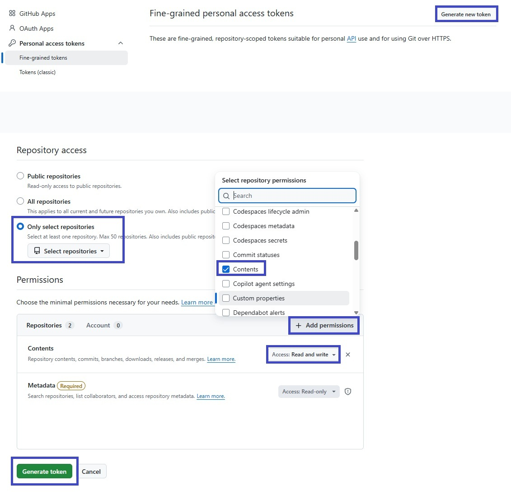

2단계만 하면 됩니다. 헷갈리는 부분은 맨 아래 "자주 묻는 질문"에 정리해뒀어요.
토큰은 어떻게 발급하나요?

토큰은 이 화면을 나가면 GitHub에서 다시 보여주지 않으니, 놓쳤다면 새로 발급하면 됩니다.
저장소 주소는 어떻게 입력하나요?
커밋을 저장할 GitHub 저장소의 주소를 그대로 붙여넣으면 됩니다. 저장소가 없다면 GitHub에서 미리 하나 만들어두세요 (비어있어도 괜찮습니다).
브랜치는 뭘 입력해야 하나요?
그 저장소의 기본 브랜치 이름입니다. 저장소 메인 화면에서 확인할 수 있고, 보통 main이며 오래된 저장소는 master인 경우도 있습니다.
이 프로그램은 프로그래머스에서 제공하는 코딩테스트 문제의 내용만 커밋하게 설정되어 있습니다. 그러나 만일의 상황에 대비하여 기업 과제테스트·정식 시험 응시 중에는 사용하지 말아주시기 바랍니다. 이 확장 프로그램 사용으로 발생하는 어떠한 문제에 대해서도 개발자는 책임을 지지 않습니다.